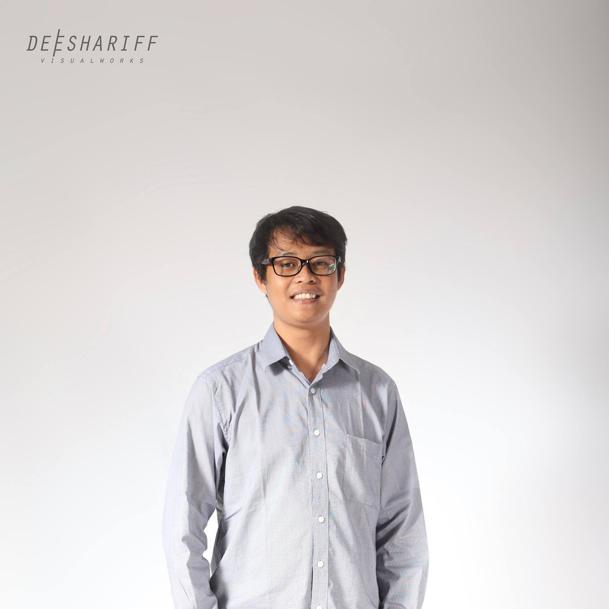

Ari Purwoko — Digital Marketing Practitioner & WordPress Web Builder
Profesional di bidang pemasaran digital dengan pengalaman lebih dari 15 tahun...

Profesional di bidang pemasaran digital dengan pengalaman lebih dari 15 tahun...
